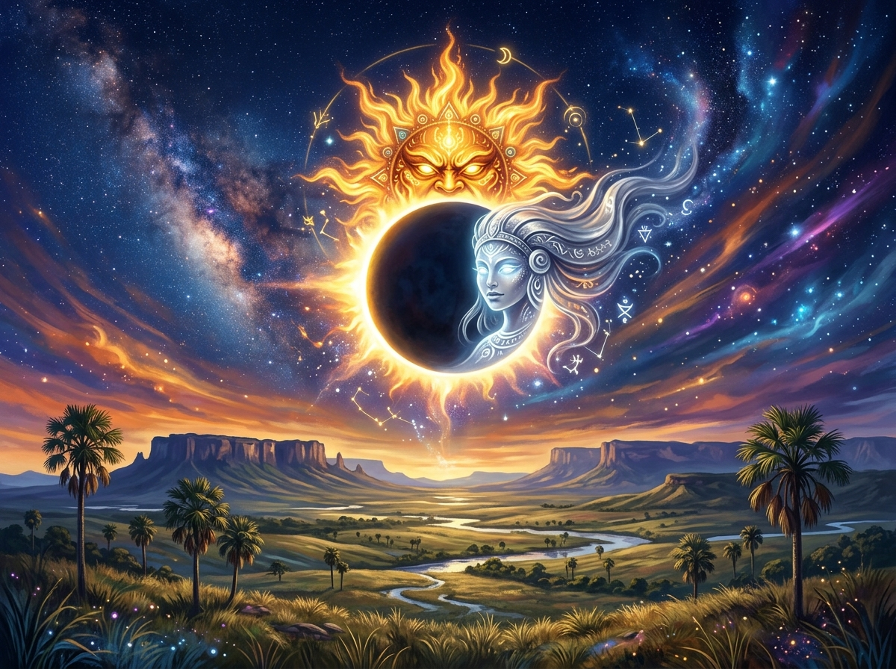

Wei e Kapei: O Amor do Sol e da Lua sobre o Lavrado

Nas noites límpidas e sem nuvens do lavrado de Roraima, os anciãos ensinam aos jovens a história de Wei, o Sol radiante e vigoroso, e Kapei, a serena e luminosa Lua.
Apaixonados nos primórdios da criação, eles desejavam permanecer eternamente juntos. Contudo, seu calor e brilho perpétuos não deixavam a noite descer sobre a Terra, fatigando os animais e as plantações. Para preservar a vida, o Criador determinou que eles reinassem em momentos opostos.
"O orvalho da manhã não é água comum: é a lágrima de Kapei, que chora ao ver Wei nascer no horizonte enquanto ela é obrigada a se esconder."
Porém, a cada ciclo de anos, as órbitas dos dois se encontram: é o eclipse solar! O dia se transforma em crepúsculo místico, os ventos silenciam e os amantes celestiais se abraçam apaixonadamente, provando que nenhum destino pode separar o amor verdadeiro.